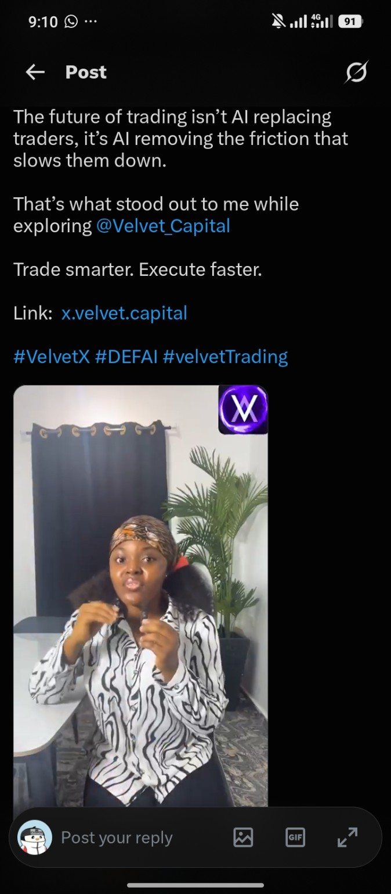

Prettybel.
Turning complex Web3 products into stories people understand.
Simplifying complex Web3 products into engaging educational videos that inform, build trust, and drive adoption.
Clear stories.
Real products.
Prettybel creates educational short-form content across blockchain, crypto, AI and emerging technologies — translating technical products into clear, engaging stories.
I’m a Web3 video content creator specializing in educational short-form content that simplifies blockchain, crypto, AI, and emerging technologies. I create videos that turn complex products into clear, engaging stories, helping projects educate their communities, increase visibility, and make their technology easier to understand.
Education first. Product aware. Community focused.
The goal is not to make Web3 sound complicated. It is to make the value obvious enough for someone to care, learn and take the next step.
Proof beats promises.
Current public proof is shown directly through published X content. Add live creator metrics here when you want to update the media kit.
Proven adoption.
My content is built to move people beyond impressions — toward understanding, onboarding and product action. Where a verified campaign figure is not publicly documented, I leave it undisclosed rather than inventing a result.
Content that moves
understanding.
Educational Videos
Engaging videos that simplify technical Web3 concepts.
Product Explainers
Break down blockchain products into easy-to-understand content.
Campaign Content
Support launches, updates, and community campaigns.
Tutorial Videos
Guide users through products step by step.
X Posts & Threads
Educational and promotional content for X.
Community Education
Awareness campaigns that help communities understand Web3 products.
Selected proof
of work.
Each project links directly to published content and the project's official site. Project details, screenshots and links are loaded from projects.json.
A real example
of product storytelling.
Two published Velvet pieces show the creator's ability to explain AI-powered trading infrastructure through both video and product-led commentary.

views on the featured Velvet product post
138 replies · 171 likes · 5 reposts · 3 bookmarks
Positioning used in the content: AI is not replacing traders — it is removing friction from the trading workflow.
View second Velvet videoSee the work.
Open the proof.
Selected published work from Prettybel. Click any screenshot or the button to open the original X post.
Scan. Watch.
Understand.
A visual-first proof wall for brands, agencies and collaborators who want to see the work immediately.
Technical enough
to understand. Human enough
to engage.
I specialize in translating technical Web3 concepts into content that is engaging, educational, and easy to understand. My approach combines clear storytelling with community-first communication, helping projects build trust, improve product awareness, and connect with both new and existing users through authentic content.
Let's simplify Web3 together, one story at a time.
Available for educational videos, product explainers, campaign content, tutorials, X content and community education.